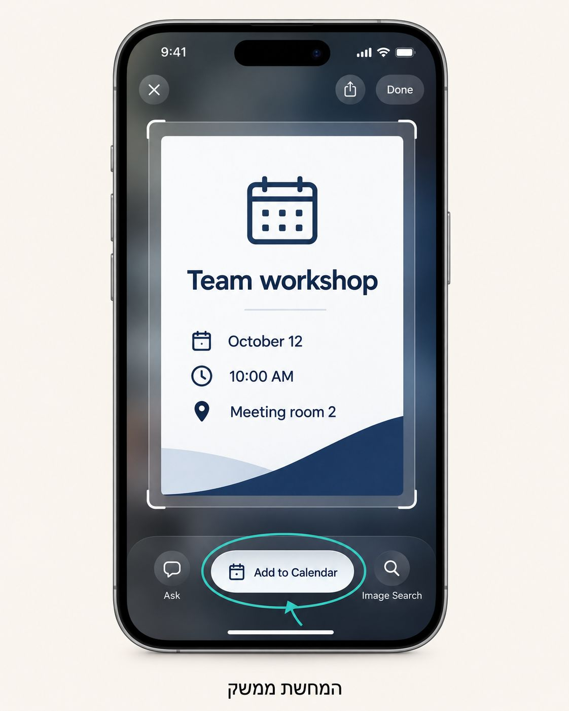

עוד טיפ אייפון מהשיחה שלי עם ChatGPT, והפעם כזה שמחבר משהו קטן להרגל שכבר יש לנו.
רואים הזמנה לאירוע, מפגש או הרצאה על המסך? באייפון תומך, עם iOS 26 ומעלה ו-Apple Intelligence פעיל, אפשר לצלם מסך וללחוץ Add to Calendar. האייפון מזהה את פרטי האירוע ומציע להכניס אותם ליומן. בודקים שעה, תאריך ומקום, ורק אז מאשרים.
ואם אתם כמוני, עובדים עם Google Calendar, לא חייבים להחליף יומן.
מחברים את חשבון Google:
בהגדרות נכנסים ל-Apps > Calendar > Calendar Accounts > Add Account > Google, ומוודאים שסנכרון Calendars מופעל.
ואז בוחרים את היומן שלו כברירת המחדל:
Settings > Apps > Calendar > Default Calendar.
החלון הוא של אפל, אבל האירוע יכול להישמר ביומן של גוגל. בפעם הראשונה כדאי לבדוק שזה באמת היומן שנבחר.
זה מסוג הדברים שאני אוהב ב-AI: לא עוד מקום לכתוב בו בקשה, אלא פחות העתקה בין שני מקומות שאני כבר משתמש בהם.
אגב יש לנו קבוצת וואטסאפ אם תרצו עזרה ביצירת בוט משלכם:
https://itzik-community-benefits.pages.dev/join
עוד טיפ אייפון מהשיחה שלי עם ChatGPT, והפעם כזה שמחבר משהו קטן להרגל שכבר יש לנו.
פורסם במקור ב LinkedIn
